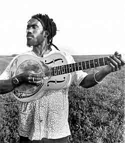

Еще каких-то семь-восемь лет назад Харрис выступал... просто на улицах Нового Орлеана. Привела его туда вовсе не нужда, а любовь к музыке и желание впитать в себя подлинный блюзовый дух.Когда в 1995 году гитарист, певец и композитор Кори Харрис выпустил на лейбле "Alligator" свой первый альбом "Between Midnight And Day", его сразу провозгласили хранителем блюзовой традиции. Второй диск, "Fish Ain't Bitin'", только подкрепил его репутацию молодого, но уже зрелого акустического блюзмена. "Возвращение в ушедшую эру", - так писал о нем журнал "Blues Revue", однако сам музыкант полагал иначе. "Я не ограничиваю себя одним и тем же и стараюсь менять все, что я делаю", - говорил он. И следующие его проекты, "Greens From The Garden" и "Vu-Du Menz", подтвердили это высказывание.
А начиналось все в в Денвере, штат Колорадо, в самом центре США, где Кори Харрис родился в 1969 г. Он вырос в музыкальном окружении и влюбился в музыку чуть ли не раньше, чем научился говорить. В три года ему подарили детскую гитару, он быстро научился играть на ней и даже пробовал что-то сочинять, слушал музыку в основном по телевизору - популярные в то время телешоу "Hee Haw" и "Soul Trane". А в 12 мать купила ему уже большую гитару. Примерно в то же время он услышал Би Би Кинга и, что главное, настоящий акустический блюз в исполнении Лайтнинг Хопкинса и понял, что музыка будет огромной частью его жизни. Кори учился играть исключительно на слух, пытаясь воспроизвести мелодии с любимых альбомов до тех пор, пока не выучивал их наизусть. Гитарой он себя не ограничивал - пел в церковной группе, играл на трубе в школьном оркестре, целый год играл на скрипке, пробовал флейту, ударные инструменты, а потом присоединился к местной рок-группе. Его постоянно тянуло экспериментировать.
Однако после
окончания школы он поехал обучаться… антропологии и языкам в колледж Бэйтс,
что в Левистоне, штат Мэн. Музыка и учеба шли у него рука об руку. После
окончания колледжа он получил грант на продолжение образования и уехал в
Камерун, где изучал местную культуру, в том числе, разумеется, и музыкальную.
Там он еще больше полюбил акустическое блюзовое звучание и понял родство
западноафриканской народной музыки с сельским американским блюзом: как звучит
поговорка - африканские корни, американские плоды (African root, American
fruit).
После возвращения в США Харрис осел в сельской местности
штата Луизиана, прародине блюза, и занялся преподаванием французского и
английского языков, продолжая занятия музыкой, но довольно скоро понял, что не
может совмещать эти занятия и окончательно решил посвятить себя блюзу.
Тогда-то он и поехал в Новый Орлеан и начал с того, что действительно слушал
уличных музыкантов и сам играл вместе с ними. Его "блюзовый университет" был в
полном смысле слова традиционным - он выступал вечером для того, чтобы собрать
денег на жизнь на ближайшее время. Но Кори не ограничивал себя одним только
блюзом - он играл и в джазовых оркестрах, аккомпанировал выступлениям танцоров
и поэтов, выступал с группами, исполнявшими религиозную музыку и отовсюду брал
что-то для собственного стиля. Его нельзя было назвать просто исполнителем
аутентичного блюза - он делал СВОЮ музыку, но опирался при этом на глубокие
традиции, причем разных направлений.
Кори Харрис быстро приобрел известность в Новом Орлеане и его окрестностях. В 1994 г. продюсер Ларри Хоффман предложил ему сделать запись для лейбла "Alligator Records". Президент "Аллигатора" Брюс Иглауэр был потрясен, услышав Харриса. "Гитарист с изумительным вкусом и сумасшедшей слайдовой техникой. К тому же он грандиозный певец и еще композитор", - так комментировал опытнейший руководитель самой авторитетной независимой блюзовой компании игру молодого музыканта. Нелишним будет упомянуть, что Харрис одинаково виртуозно владеет как обычным акустическим Гибсоном, так и специфической американской гитарой "National Rezophonic" (его любимой моделью), которая имеет металлический отзвук в своем тембре.
После вышедшего в 1995 г. альбома "Between Midnight And Day" Харрис сразу стал известен буквально всей Америке. Певица Натали Мерчант (Natalie Merchant), услышав его, сразу же предложила гитаристу открывать все ее выступления во время большого тура по Западному побережью. А дальше… дальше были выступления с Бадди Гаем, Би Би Кингом, группой "The Dave Matthews Band", причем Дэйв Мэттьюс попросту включил Харриса в состав бэнда и они играли вместе все сеты. Дальше больше - начались поездки в Европу, Японию, даже в Россию.
В 1997 году выходит второй альбом "Fish Ain't Bitin'", в котором Кори Харрис в полную силу проявляется как автор песен - его собственных работ на диске больше половины. К тому же он добавляет в аранжировки духовую секцию и все отмечают, что уже можно говорить собственно о стиле Харриса. Альбом выигрывает самую престижную в блюзовом мире премию У. Хэнди в номинации "Акустический блюзовый альбом 1997 года".
Но Харрис не был бы самим собой, если бы просто развивал успех на основе достигнутого. Следующий его проект получился совершенно неожиданным и даже шокирующим для многих поклонников артиста. "Greens From The Garden" - это уже полностью авторский альбом от начала до конца - даже если Кори поет чужие песни, он полностью перерабатывает их концепцию, не говоря уже об аранжировках. И это уже не тот акустический блюз Дельты, что он играл раньше - вернее, не только он. Здесь наряду с акустикой много "сырого", грубого электрического звучания, и, главное, здесь есть не только чистый блюз. Карибские ритмы, креольские мамбо, регтаймы, рэггий, рок - все смешалось в этом котле в единое целое, став в конце концов… тем же самым блюзом - по духу, по настроению. "Я хотел показать публике, что мой образ гораздо глубже просто одинокого парня с гитарой. Я люблю быть и таким, но я люблю и многое другое", - Харрис даже спел две песни по-французски, что добавило пикантности всему музыкальному салату, но отнюдь не убавило блюзовости.
Кстати, название альбома намекает именно на принцип культурного "салата" как идеи всего проекта. Различные ингредиенты "Зелени с огорода" смешиваются в одной миске и должны "употребляться" вместе, целиком - только при цельном восприятии этой музыки можно прочувствовать единый ритмический пульс, который наполняет ее и воздействует скорее на подсознание.
У нас в стране Кори Харрис до недавнего времени был совершенно неизвестен. Это сейчас у нас уже появился его последний альбом, "Vu-Du Menz" и многие блюзфэны заинтересовались этим самобытным артистом. Нам удалось связаться с ним и задать несколько вопросов.
- Кори, привет с противоположной стороны Земли! Скажи, какие у тебя ассоциации вызывает Россия?
- О, я провел незабываемый месяц в России весной 1988 года - в Москве, Орле и Санкт-Петербурге - это было необычно и здорово. Для меня стало огромным сюрпризом то, что мои альбомы продаются у вас.
- Точно таким же приятным сюрпризом для меня лично стал твой предпоследний альбом "Greens From The Garden". Ты смешал там в единое целое акустический и электрический блюз, а также добавил некоторую толику фольклора, рока и современной электроники. Ты не ощущаешь все это в целом как уже новый блюзовый стиль?
- Я не думаю, что этот альбом сыгран в каком-то новом стиле, скорее он стал собранием той музыки, которая в последнее время производит на меня наибольшее впечатление. Я стараюсь заглянуть в самые истоки черного фольклора Америки, почувствовать, что такое настоящие африканские барабаны, и все это, конечно, влияет на мою музыку. Убежден, что ритм - самый важный элемент африканской и афроамериканской музыки, и стараюсь воспринять все новое для меня в ритме. Я просто являюсь проводником для традиции в новую музыку.
- Ты очень разносторонний человек. Блюз - это вся твоя жизнь или скорее развлечение?
- Блюз - мои музыкальные корни, моя основа, как, впрочем, почти у любого черного на Западе, сознает он это или нет. Все же я не могу сказать, что блюз -вся моя жизнь, это будет слишком узко, вся моя жизнь - это музыка вообще. И не просто моя внутренняя жизнь, занятия музыкой еще дают мне деньги на жизнь. Квартира, где живет моя семья, еда на столе и все остальное - это тоже от музыки... Я - поклонник очень разных стилей, знаете, примерно так же, как люди любят разную еду, так я люблю разную музыку. Каждый день видеть на столе только капусту с картошкой было бы грустно.
- В альбоме ты несколько песен поешь по-французски, и это звучит классно, но очень непривычно для блюза. Когда ты начал петь по-французски?
- Впервые это случилось за год до издания этого альбома, то есть в 1998 году. Странно, что этого не произошло раньше, я ведь свободно владею французским.
- Много ли времени ты проводишь по гастролям? Где тебе понравилось выступать больше всего?
- Да я почти постоянно в дороге, обычно у меня в год бывает до 200 концертов. Мои любимые страны - это Испания, Италия и любые тропические места. Очень хотелось бы съездить на Кубу.
- Что ты больше любишь: концерты или работу в студии?
- Я очень люблю живые выступления за то, что они дают обратную непосредственную связь со зрителем и свободу для исполнителя петь так, как он хочет в данный момент, и столько, сколько хочет. Но зато работа в студии много дает для творчества - ты можешь записать несколько версий одной и той же вещи, а затем у тебя есть все возможности, чтобы еще улучшить результат. Это очень вдохновляет.
- С кем из блюзменов тебе хотелось бы поработать вместе? А может, не только с блюзменами...
- Это сложный вопрос для меня. Хоть я и музыкальный фанатик, но редко мечтаю о том, чтобы с кем-нибудь поиграть, даже с теми, перед кем я преклоняюсь. Что мне действительно по душе, так это делиться своим музыкальным опытом с артистами из совершенно иной среды. Мне сразу приходит на ум Владимир Высоцкий - у меня есть два его диска, которые я приобрел в Санкт-Петербурге, и я был восхищен не только его манерой, голосом и текстами (для меня сделали несколько переводов), но и несгибаемым мужеством этого человека.
Он пел свои песни, невзирая ни на что и ни на кого, даже на Советскую власть, которая пыталась заставить его замолчать. Это был великий артист - с ним я хотел бы встретиться, но увы...
- Ты собираешься в следующих своих работах добавить к блюзу еще что-нибудь новенькое?
- Не могу сказать заранее, что именно, но я люблю разные изменения. Я всегда стараюсь узнать новое о музыке - и с практической, и с теоретической точек зрения, чтобы улучшить СВОЮ музыку. Мне нравятся некоторые восточные мелодические и гармонические принципы, и я чувствую, что это может стать следующим моим экспериментом. Ну и, конечно, я всегда ищу новое для себя в Африке.
В следующем своем диске, "Vu-Du Menz", Кори Харрис, тем не менее, опять обратился к старой доброй акустической музыке, но сделал это в дуэте с другим известным блюзменом из того же Нового Орлеана - Генри Батлером. Здесь слушатель найдет и традиционный блюз, и регтаймы, и новоорлеанский фанк, и немного джаза… этот альбом, в отличие от предыдущих работ Кори, переиздан в Москве, поэтому у вас есть все шансы найти его и получить настоящее удовольствие от непредсказуемой дуэли двух мастеров. А разница в возрасте исполнителей в 20 лет только подчеркивает тот факт, что в блюзе главное - эмоции и глубокое чувство стиля - так здорово они понимают друг друга.
Вообще, слушая Кори Харриса, все время ловишь себя на мысли: "Черт возьми, непонятно, что интереснее - просто ловить кайф от его классной музыки или с нетерпением ждать следующую вещь - чего еще он в ней выкинет?"
Евгений ДОЛГИХ
Перепечатано из журнала Jazz-квадрат